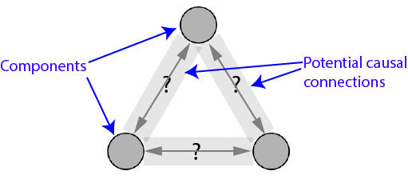
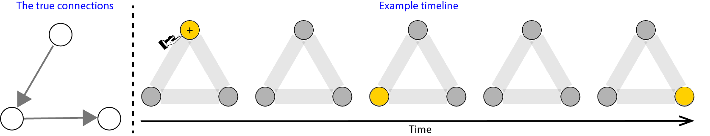
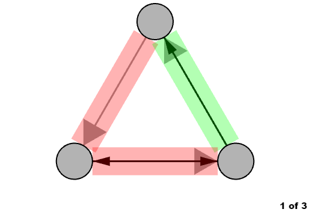

University College London, Experimental Psychology
By answering the following questions, you are participating in a study being performed by cognitive scientists in the UCL Department of Experimental Psychology. If you have questions about this research, please contact us at neil.bramley@ucl.ac.uk.
By selecting the "I Agree" button below, you acknowledge that:
You must be at least 18 years old to participate.
Your participation in this research is voluntary.
You may decline to answer any or all of the following questions by closing this window in your browser.
You may decline further participation, at any time, without adverse consequences.
Your anonymity is assured; the researchers who have requested your participation will not receive any personal information about you.
If you agree to the above and would like to participate in the experiment, please press I Agree to proceed with the instructions. Otherwise you may close the window.
Instructions
In this task you will try to work out how several causal devices work.
The causal devices look like this:

Figure 1: A device.
Some of the components are connected together while others are not. Your job is to work out the where the connections are in each device.
There are 12 devices in total.
You will get to interact with each device for 45 seconds.
During this time, you will be able to turn components on by left clicking on them. You are allowed to do this 6 times in total for each device.
When you turn on component on it will be marked with a "+" and will activate. When a component activates, it is marked by turning yellow for a moment. It will then normally activate any other components that it connects to, after a delay. These can then activate other components after a further delay, and so on according to the causal connections.
In the example below, the person turns on the top component. A little while later the bottom left component turns on. Then, a while after that the bottom right component turns on.

Figure 2: Interacting with the device.
The connections work 90% of the time.
Components never activate by themselves but only if they are caused to do so by you (yellow and marked by a "+") OR as knock-on effect of one of the other component activations (yellow, no "+").
Note: Please do not change the zoom level during the experiment.
he experiment only works properly if you have your browser zoom level on 100% throughout.
(You can change the zoom level to 100% by pressing "cmd+0" on a mac or "ctrl+0" on a PC.)
Please press Continue to proceed with the instructions.
Instructions
On average, the connections always take around 1.5 seconds to work.
However, there is a little bit of variability within each connection. Sometimes the same connection will work slightly faster, other times slightly slower.
On average, the connections take around 1.5 seconds to work.
However there is quite a lot of variation within each connection. Sometimes the same connection will work a lot faster, other times a lot slower.
On average, connections take around 1.5 seconds to work.
However there is quite a lot of variation between the different connections. Some always work faster, others always work slower.
Here is an example device to help you get the idea. The picture on the left shows where the true connections go. Push start to watch the device in action.
Figure 3. The true connections for the example device on the right.
Remember, your job is to work out where the true connections go.
You mark where you think they go by left clicking in the grey boxes between each pair of components. This cycles through the different options (forward connection, backward connection, both ways connection, no connection). Once you have got the connection(s) you want, click the "Confirm" button to lock in the changes.
Try this now in the example above.
Try to mark the true connections in the example above so they match the picture on the left. You can move on once you have done this.
Please press Continue to proceed with the instructions.
Instructions
Your goal is to identify the true connections. You will get 5 cents for each space where you:
(1) Correctly identify that there is a forward connection
(2) Correctly identify that there is backward connection
(3) Correctly identify that there is a connection going in both directions
(4) Correctly identify that there is no connection.
If you mark anything other than the correct connection you get no bonus for that space.
The bonuses will be based on randomly chosen time for each device. Sometimes this will be nearer the beginning, sometimes near the end of the 45 seconds. You will not be able to tell.
This means you should try to mark the right connections (and confirm them) as quickly as possible! You can make changes at any time during the trial by clicking in the grey boxes and pressing confirm.
At the end of each problem, you will see feedback showing the true causal connections and how many you had identified right by the end.

Figure 4. Feedback. The the true connections are shown in grey with wide arrowheads.
In the example above, the person correctly identified the connection at the top right and made 5 cents. However the person marked no connection for the top left space but there was actually a connection (top to bottom left), and marked both directions for the space at the bottom when the true connection really only went in one direction (bottom left to bottom right). This gave the person a 5 cent bonus in total for this device.
Remember: The bonuses will be based on randomly chosen time points during the task, not what you have marked by the end of each problem. This means you should mark your best guess as quickly as possible!
Please press Continue to proceed with the instructions.
Comprehension check
Please indicate for each statement whether it is correct or false.
"Your job is to work out where the true connections go."
correct
false
"You can activate components up to 12 times."
correct
false
"The connections work with 90% probability."
correct
false
correct
false
"You get a bonus based on the connections you have correct at the end of each problem."
correct
false
Please click Continue to proceed.
Well done, you got all the questions correct!
You are now ready to start the task.
The first problem is a practice, then you will be playing for points.
Please click Continue to proceed.
Unfortunately, you didn't answer all of the comprehension check questions correctly.
Please have another close look at the instructions and work out whether these statements are correct or false:
Progress
Click Start to begin.
Performance feedback
Demographic information
How did you work out where the connections were? What did you find particularly easy/hard? Did you have a stragey, if so what was it? Did you spot any bugs or errors?
Please answer the following questions about yourself to complete the experiment:
1. Age:
years
2. Gender:
Female
Male
Please press finish to complete the experiment.
Experiment complete
Thank you, you have now completed the experiment!
You may now return to mechanical Turk and enter the following code.